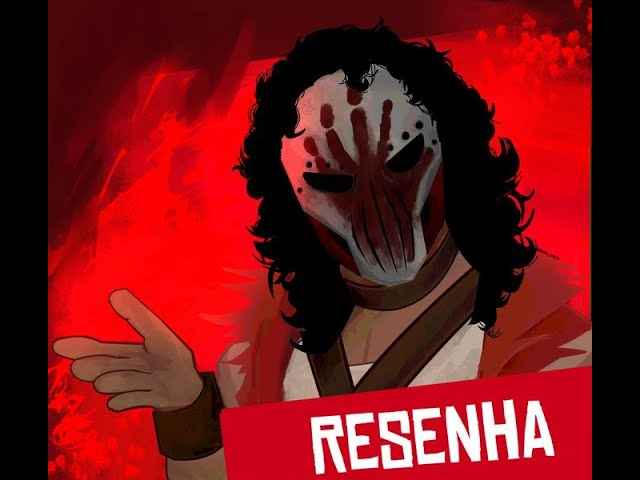

Nota: 4.99
(601 resenhas)

Desaparecido no Mar, 1803 O BOM NAVIO "OBRA DINN".
R$59,99
Classificação Indicativa:
16
Violência
Temas sensíveis
Nudez
Sobre Este Jogo
Desaparecido no Mar, 1803
O BOM NAVIO
“OBRA DINN”
----------------
Construído em 1796, em Londres ~ 800 t, calado de 5,5m
Capitão R. WITTEREL ~ Tripulação de 51 homens
Última viagem ao Oriente ~ Nunca chegou ao Cabo
----------------
Contatar escritório londrino da Cia. das Índias Orientais
para questões ou depoimentos.
Uma Aventura de Indenização em Cores Mínimas
Em 1802, o navio mercante Obra Dinn partiu de Londres para o Oriente com mais de duzentas toneladas de mercadoria. Seis meses depois, ainda não havia chegado ao ponto de encontro no Cabo da Boa Esperança, sendo então declarado como desaparecido no mar.
Na manhã de hoje, 14 de outubro de 1807, o Obra Dinn derivou ao porto de Falmouth com velas danificadas e sem qualquer tripulação visível. No papel do(a) investigador(a) de seguros do escritório londrino da Companhia das Índias Orientais, parta imediatamente a Falmouth, encontre meios de abordar o navio e elabore um relatório de sinistro.
Return of the Obra Dinn é uma aventura de mistério em primeira pessoa baseada em exploração e dedução lógica.
Requisitos de Sistema
Mínimos:
SO: Windows 7 ou acima.
Processador: 2 GHz Intel i5 ou melhor.
Memória: 4 GB de RAM.
Placa de vídeo: Discrete GPU.
Armazenamento: 2 GB de espaço disponível.
Avaliações
29,5 horas registradas
DATA DA PUBLICAÇÃO: 1 de abril
Bom demais pra quem gosta de investigação, da para descobrir os casos de diversas formas e tal. Gostei bastante do tutorial realizado no começo, bem explicativo. No finalzinho começa a ficar mais difícil, porém mais recompensador. Essa estética monocromática me fez lembrar da minha infância, 5/5.
9,1 horas registradas
DATA DA PUBLICAÇÃO: 25 de dezembro
Simplesmente um jogasso. toda a estética, mecânica e conceito do jogo são muito bem construídos.
o jogo te coloca numa história maluca e bem elaborada sem qualquer contexto prévio,
fazendo com que vc tenha que se virar para descobrir os segredos desse navio.
além disso toda a investigação, as diferentes linhas de raciocínio q vc pode seguir para deduzir corretamente os acontecimentos é mt divertida.
Minha única crítica é a ausência de labirintos.

Resenhador Noturno
+9999 resenhas
14,2 horas registradas
DATA DA PUBLICAÇÃO: 6 de março
Tem uma resenha pra fazer, então vamos lá: Obra Dinn é um dos jogos de puzzle e investigação mais incríveis já feitos, o estilo de arte combina perfeitamente com a estética do jogo.
Você receberá apenas dicas durante a jogatina e irá deduzir alguns dos passageiros e seus finais a partir de pequenos detalhes.
Compre o jogo, prometo que a resenha será grande.
É isso, Obra Dinn foi resenhado, mais uma resenha pra conta.
11,6 horas registradas
DATA DA PUBLICAÇÃO: 16 de julho
Simplesmente o segundo melhor jogo de investigação, ficando por muito pouco atrás de The Case of the Golden Idol. A estética é deslumbrante, a história é extremamente interessante e os mistérios são fenomenais. Todos os jogos do gênero deveriam seguir os passos dessa obra de arte e aprender a deixar o jogador deduzir sozinho.